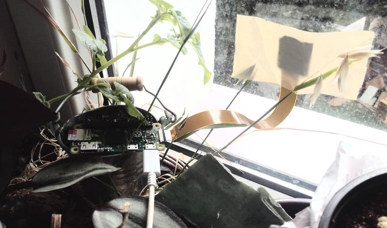
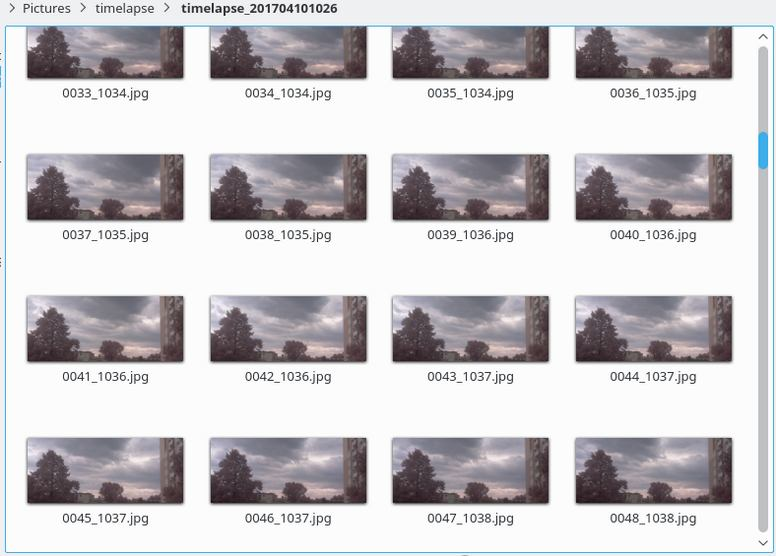
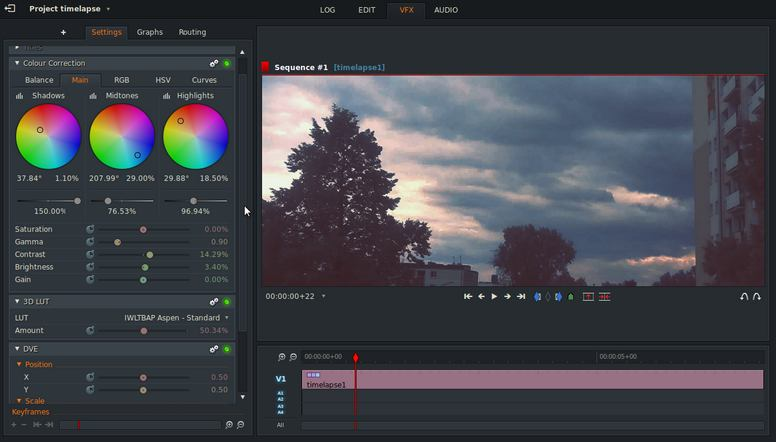
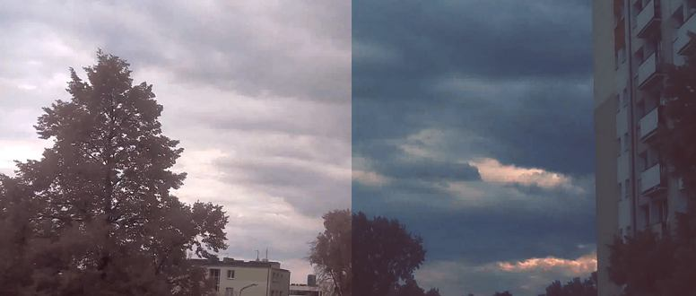

RaspberryPi Zero Timelapse
June 25, 2017 —
Krzysztof Jankowski

I finaly dicover the perfect use for my Zero. I want to build the ultimate timelapse device.
Parts
It will have:
- moving arm
- infrared camera 5MP
- scripts to automate the process
For now I'm working on the timelapse workflow. I'll have the moving arm in few weeks.
Setup
I ducktaped the camera to window and power up Raspberry with good power bank. Cron is runing raspiLapseCam.py script at each reboot.
I leave the Pi computer for and hour and then grab all images it takes.

Postproduction
Then I use bake.sh to make a 2K video file.
ls *.jpg > list.txt
mencoder -nosound -ovc lavc -lavcopts vcodec=mpeg4:aspect=2.39/1:vbitrate=8000000 -vf scale=2048:858 -o timelapse.avi -mf type=jpeg:fps=24 mf://@list.txt
There's always room for image quality improvements. LightWorks is perfect for this.


Final Videos
Tags: raspberrypi, photography, video